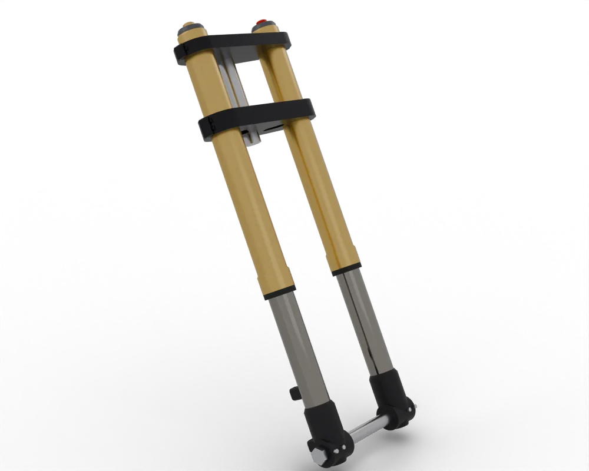
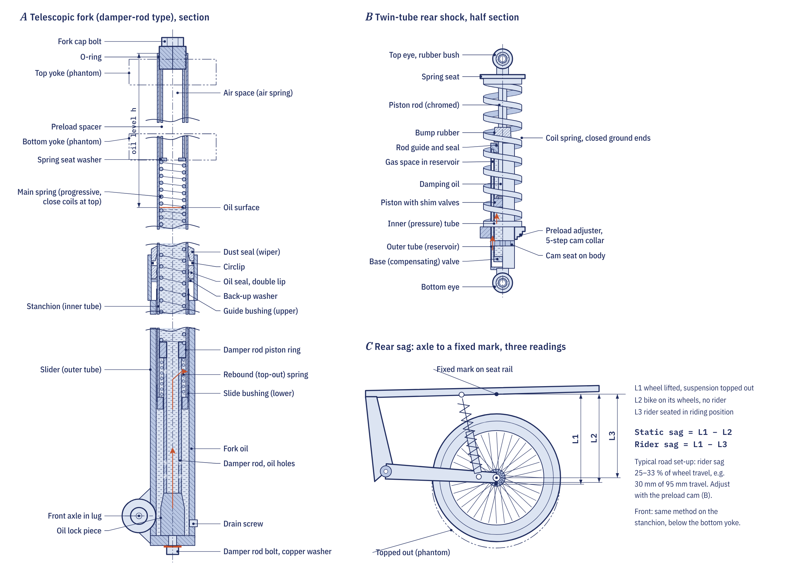

What suspension is for
A tyre can only steer, drive and brake while it is pressed onto the road. Suspension lets the wheel follow bumps while the rest of the motorcycle travels more smoothly above them. Engineers split the machine into two parts. The sprung mass is everything carried by the springs: frame, engine, fuel and rider. The unsprung mass is everything that moves with the wheel: the wheel and tyre, brake disc and caliper, the fork lower legs and part of the swingarm, shock and chain.
The lighter the unsprung mass compared with the sprung mass, the less a bump disturbs the chassis and the faster the tyre can follow the surface. That is why sports machines use cast aluminium wheels, light discs and upside-down forks.
Springs and preload
The spring holds the bike up and stores the energy of each bump. Its spring rate is the force needed to compress it by one millimetre, in N/mm, so the force it gives is the rate multiplied by how far it is compressed.
Preload is compression put into the spring before the suspension moves at all, set by a threaded collar, a stepped cam ring on many twin shocks, or a spacer under the fork cap. Preload does not make the spring stiffer. It changes the load at which the suspension starts to move, and so the ride height and the sag. A heavier rider or a passenger needs more preload to restore the sag; if the right sag cannot be reached within the adjuster's range, the spring rate itself is wrong. Progressive fork springs have closely wound coils that close up early, so their rate rises with travel.

Damping: controlling the spring
A spring on its own would let the bike bounce at its natural frequency, about 1 to 2 times a second for the sprung mass. The damper stops this by forcing oil through small passages, turning motion into heat. Compression damping resists the wheel moving up into a bump; rebound damping resists the spring pushing it back down, and is normally the stronger of the two, because the spring has stored energy that must be released in a controlled way.
Too little rebound damping gives a pogo or wallowing ride. Too much makes the suspension pack down: it cannot extend fully before the next bump, so it loses travel and grip over a series of bumps.
The simplest dampers push oil through fixed holes. Their resistance rises with the square of speed, so they are soft over gentle undulations and harsh on sharp edges. Better dampers use shim stacks, thin spring-steel washers over ports in a piston that bend open as pressure rises, which lets the maker shape the damping curve. Clickers on adjustable suspension usually vary a small bleed passage alongside the shims.
Types of front fork
- Damper-rod forks have a tube with holes bolted to the bottom of the slider; oil is metered through the holes. They are simple and cheap, and fitted to the K-Light 125 and most commuters.
- Cartridge forks use a sealed inner tube with shim-stacked compression and rebound pistons, giving much better control and adjustment. Many modern designs put the damping in one leg and the spring in the other.
- Upside-down (inverted) forks clamp the large tube at the top and put the slim tube at the bottom. This is stiffer where the bending load is highest and lowers unsprung mass, but leaves the seals exposed to stones and dirt.
Fork oil does the damping, so its viscosity and level set the fork's behaviour. The K-Light 125 manual specifies 46# shock absorber oil at 285 ± 2 ml per leg. The air gap above the oil acts as a progressive air spring at the end of travel, so a higher level resists bottoming more. Milky fork oil means water has got in past failed seals.
Rear suspension: twin shocks and monoshocks
Twin shocks run from the swingarm near the axle up to the frame rails. They are simple and cheap, and the shock moves almost in step with the wheel. The K-Light 125 uses twin shocks with adjustable preload. A monoshock uses a single shock on the centreline, mounted either straight to the swingarm or through a linkage of rocker and pull rod.
A linkage gives a rising rate: the shock moves little for each millimetre of wheel travel near full extension and more near full compression. The rear is soft over small bumps and still resists bottoming on large ones. Because the wheel moves two to three times as far as the shock, the shock spring is several times stiffer than the rate felt at the wheel.
Sag: the one setting to get right
Sag is how far the suspension compresses from fully extended under load. Static sag is with the bike alone on its wheels; rider sag is with you sitting in your normal riding position. Course figures for a road or commuter bike are a front rider sag of 25 to 35 per cent of travel and a rear rider sag of 25 to 33 per cent, with 5 to 15 mm of rear static sag.
- Lift the rear until the wheel is just off the ground and measure from the axle to a fixed point on the frame or bodywork directly above it.
- Put the bike on its wheels, bounce it gently and measure again: the difference is static sag.
- Sit on the bike in your riding gear, feet on the pegs, with a helper steadying it, and measure a third time: the difference from fully extended is rider sag.
- Adjust preload until rider sag is in range, then check static sag.
Static sag tells you whether the spring is right. With correct rider sag, very little static sag means the spring is too soft and has been preloaded hard to compensate; too much static sag means it is too stiff.
Many rear shocks hold nitrogen at 1 to 2 MPa behind a floating piston. Never heat, puncture or dismantle a gas shock without first releasing the gas as the maker directs. Most small-bike shocks are sealed and replaced as a unit.
Simple suspension checks
Push down hard on the seat and let go: a healthy rear should rise once and settle, not bounce. Look for oil on the shock shaft and fork stanchions, which means a seal has failed, and for a bent shock shaft or worn mounting bushes. Linkage bearings on monoshock bikes need grease every 10,000 to 20,000 km on the road and much more often off-road; a seized linkage makes the rear harsh and wears the shock. Worn steering head bearings also upset the front end, and our article on tyre pressure and wear explains how pressure changes the way the suspension feels.
Go deeper
- Chapter 5.5: Suspension: spring force, damping, fork types and the sag and fork-oil job sheets
- Chapter 5.4: Frame and steering geometry: rake, trail and steering bearings
- Equations summary: spring force, sag and wheel rate
- Drivetrain and chassis quiz: test yourself on Module 5
- Measuring sag
- Setting fork oil level
- Fork oil seal replacement
- Rear shock check
- Fork leaking oil
- Rear sags too far
Frequently asked questions
What is sag on a motorcycle?
Sag is how far the suspension compresses from fully extended under load. Static sag is with the bike alone and rider sag is with you on board. A road bike typically runs a rider sag of about a quarter to a third of its travel.
Does adding preload make the suspension stiffer?
No. Preload changes the load at which the spring starts to compress, so it changes ride height and sag, but the spring rate stays the same. If you cannot reach the right sag with the adjuster, you need a different spring.
What does rebound damping do?
Rebound damping slows the spring as it pushes the wheel back down after a bump. Too little and the bike bounces or wallows; too much and the suspension packs down over a series of bumps and loses grip.
What is the difference between a conventional and an upside-down fork?
A conventional fork has the slim tubes at the top in the yokes and the large sliders at the bottom. An upside-down fork reverses this, which is stiffer and lowers unsprung mass, but leaves the seals more exposed to dirt.
Why is my fork oil milky?
Milky fork oil means water has got in, usually past worn or damaged fork seals. Replace the seals and the oil, filling each leg to the volume or level in the manual.
Written by Transitions Lab for the Motopedia open motorcycle course. Text and illustrations are licensed CC BY-SA 4.0. Figures and values come from the course modules; see sources and credits.